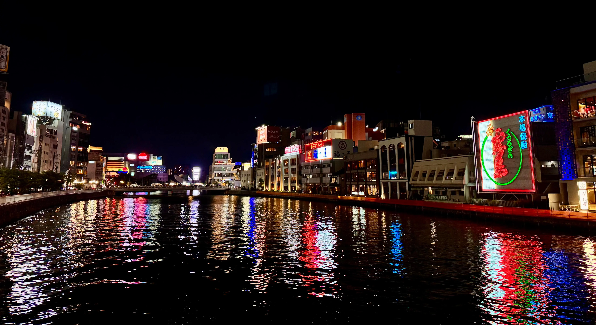
Morgens heißt es mal wieder: Koffer packen! Wir zurren zum Hauptbahnhof, wo wir den Shinkansen nach Fukuoka nehmen. Fukuoka ist Japans fünftgrößte Stadt. Sie liegt ganz im Nordwesten der Insel Kyushu und damit fast eine Stunde von Kumamoto entfernt.
Schon bei der Ankunft merken wir, dass der Bahnhof deutlich größer ist als die von Kumamoto und Kagoshima, und müssen uns erst einmal zurechtfinden. Wir kaufen direkt Karten für den nächsten Stopp nach unserem jetzigen, da wir hier leider nur zwei Nächte verbringen werden und die nächste Strecke sehr lang ist. An dieser Stelle: Cliffhanger ;)
Unser neues Hotel ist ganz anders als die letzten und spiegelt ziemlich gut das wider, was den Tag über unser Eindruck von Fukuoka wird. Es ist jung, modern, bunt und gastfreundlich. Es gibt einen großen Aufenthaltsbereich mit bequemen Sesseln, die zum Ausruhen einladen. Genau das machen wir auch, denn wie immer sind wir zu früh zum Einchecken.
Die Ruhe bleibt aber nicht lange, denn wir laufen Richtung Innenstadt zu – na? – einem Einkaufszentrum!
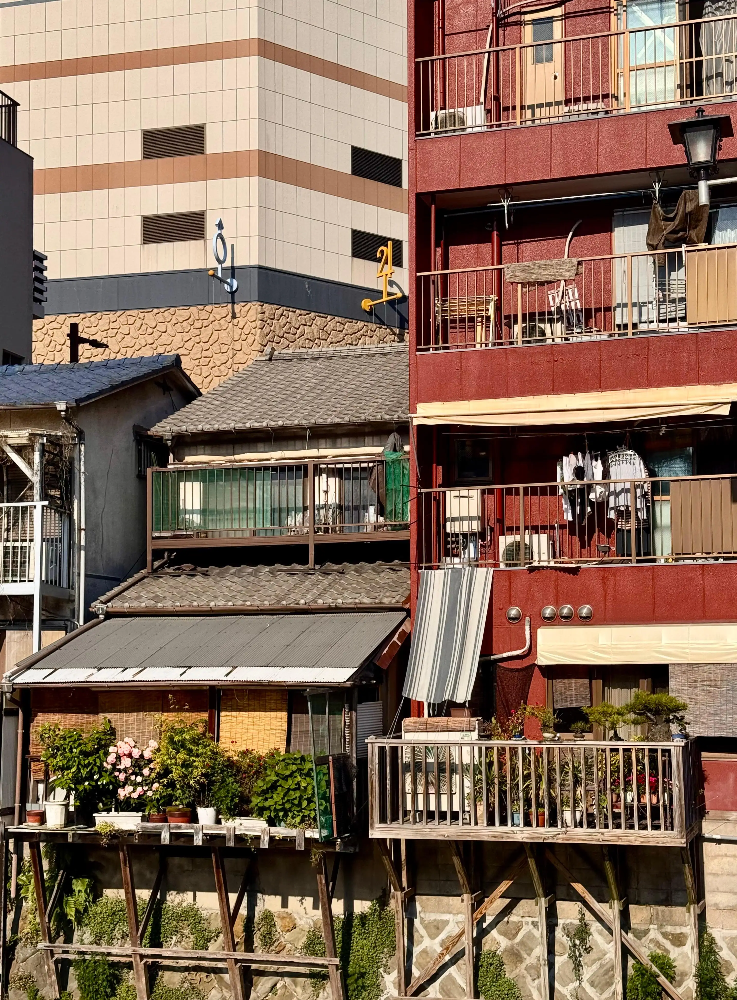
Der Weg dorthin ist interessant, denn wir laufen durch viele kleine Straßen. Man merkt direkt, dass die Leute, die uns entgegenkommen, weniger spießig aussehen als in den beiden anderen Städten. Wir überqueren diverse Brücken auf dem Weg, denn Flüsse sind Fukuokas Lebensader.
Das Einkaufszentrum mit dem Namen Canal City spiegelt das wider, denn mitten durch die bunten, hohen Gebäude fließt ein kleiner Kanal. Die Mall ist also um das Wasser herum gebaut. Außerdem besteht sie aus vielen unterschiedlichen Gebäudeteilen, weswegen der ganze Komplex total interessant aussieht. Das rote Hauptgebäude, das ähnlich wie ein Kolosseum im Bogen gebaut ist, ragt um eine Art Teich herum, in dem es zu jeder vollen Stunde Wasserspiele gibt. So können die Besucher der Mall aus jeder Etage das Spektakel mit anschauen.
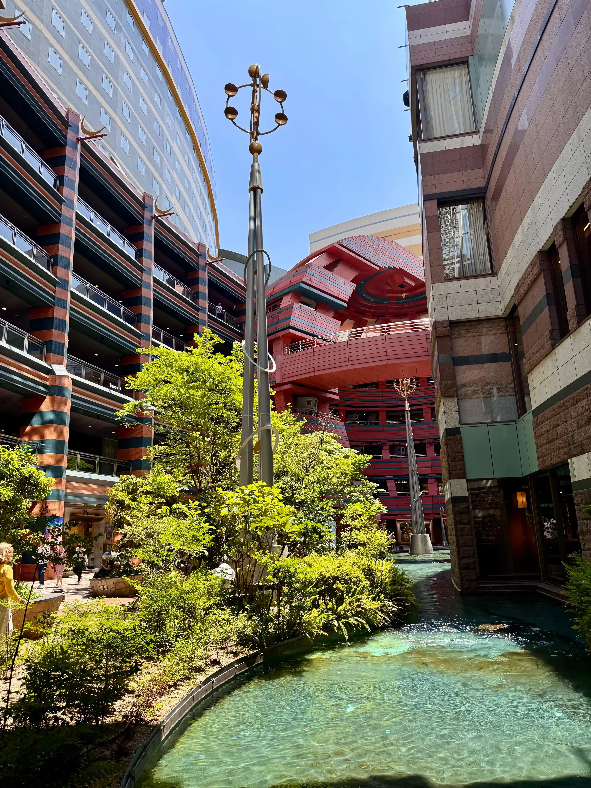
Ich kaufe Mama und mir knackig kandierte Erdbeeren an einem der Stände direkt am Eingang und wir knuspern sie weg, während wir durch den kleinen begrünten Weg in der Mall gehen, der an dem Kanal entlangführt. Er endet auf dem „Marktplatz“, von wo aus man die Wasserspiele sehen kann. Und so will es der Zufall, schlägt es genau dann zur vollen Stunde.
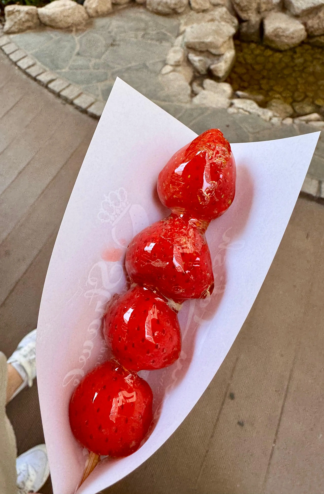
Ich erwarte Bach oder Mozart oder, wie in Singapur, bekannte Soundtracks. Stattdessen spielt laut J-Pop. Die kleinen Fontänen wackeln begeistert im Takt und die großen Geschwister dahinter machen elegante Pirouetten. Es macht wahnsinnig Spaß, dem Spektakel zuzusehen. Ich hatte nicht gedacht, dass mich das Ganze so begeistert.
Die Show dauert nicht lange und danach lösen sich die Menschentrauben langsam auf. Wir starten mit einem schön in Szene gesetzten Ghibli Store, in dem fake Bäume wachsen und es alles von den Ghibli-Filmen gibt, was man sich vorstellen mag. Taschentücher, Schreibwaren, Accessoires, Kuscheltiere, Sammelfiguren, Geschirr … und eine lebensgroße Statue von Totoro, neben dem wir natürlich ein Foto machen.
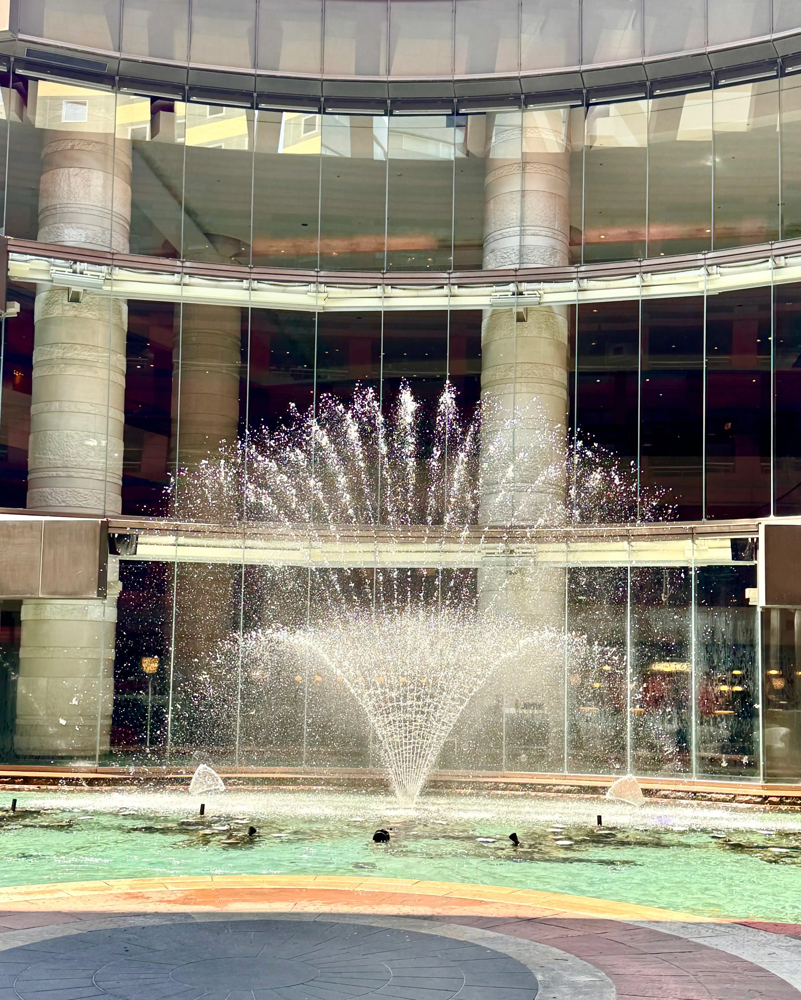
Weiter geht es in Kleidungsgeschäfte, in denen mir tatsächlich nicht gesagt wird, dass es nur eine Größe gibt, selbst wenn die Geschäfte hier natürlich genauso size-inclusive sind wie überall sonst auch. Ich finde natürlich trotzdem ein schönes Oberteil und als ich aus dem Laden rausgehe, entdecke ich einen Onitsuka Tiger-Shop direkt daneben.
Onitsuka ist eine alte japanische Schuhmarke, die von Asics aufgekauft wurde, aber immer noch hochwertige Lederschuhe verkauft. In Deutschland sind die nicht bezahlbar und selbst wenn sie in Japan immer noch teuer sind, dann doch günstiger als bei uns.
Die einzelnen Schuhe stehen auf kleinen Podesten im Laden und sobald man einen anprobieren will, muss man einem der ungefähr fünfzig Angestellten Bescheid sagen, um die richtige Größe zu bekommen. Ich überlege lange, entscheide mich dann aber doch für dunkle Ballerinas in Chrome-Optik. Stolz trage ich sie aus dem Laden. Meine eigenen Onitsuka Tiger!
Auch Mama schaut nach Schuhen, findet aber keine. Wir verbringen dennoch lange Zeit auf all den Etagen und stöbern durch die riesige Auswahl.
Als wir irgendwann Hunger bekommen, suche ich uns ein Ramen-Lokal heraus, das online empfohlen wurde. Es ist eine Kette, die es in ganz Japan gibt, aber scheinbar nur in dieser Zweigstelle eine besondere Brühe anbietet. Wir stehen an, um hineinzukommen, und müssen bereits in der Schlange auswählen, was wir essen wollen.
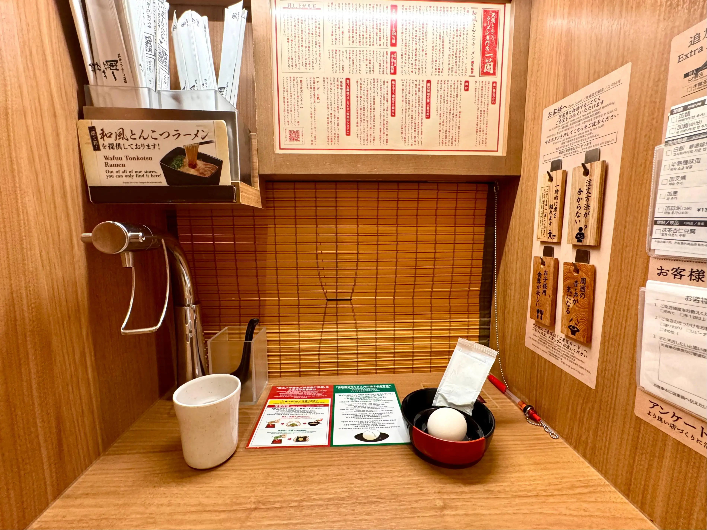
Ähnlich wie bereits in Kagoshima ist es auch hier so, dass der ganze Bestellprozess im Stehen stattfindet und du praktisch nur zum Essen im Restaurant sitzt, um es danach wieder zu verlassen.
Als wir endlich an der Reihe sind, werden wir in einen vollen Raum geführt, in dem die anderen Gäste in kleinen Kabinen, ähnlich unserer Wahlkabinen, sitzen, mit dem Gesicht zur Wand, und ihre Suppe schlürfen. Unseren Zettel mit der Bestellung heften wir an die Wand vor uns, dann geht ein kleiner Vorhang hoch und ein anonymer Oberkörper erscheint, um uns das Besteck und ein Glas Wasser zu geben. Dann schließt sich der Vorhang wieder.
Wir warten auf die Suppe und Mama, die ja nach wie vor nicht mit Stäbchen essen kann, hat den genialen Einfall, einen Kellner zu rufen, um westliches Besteck zu bekommen. Was sie bekommt, als der Vorhang sich bei ihr wieder öffnet, ist Kinderbesteck, mit kleinen Bärchen verziert.
Schließlich bekommen wir unsere Suppen und schlürfen sie weg. Sie sind wirklich sehr lecker, aber das ganze Drumherum ist für uns Westler sehr fremd. Außerdem besteht die Suppe wirklich nur aus Brühe, Nudeln und Schweinefleisch. Natürlich landet etwas von dem Fett auf meiner Kleidung.
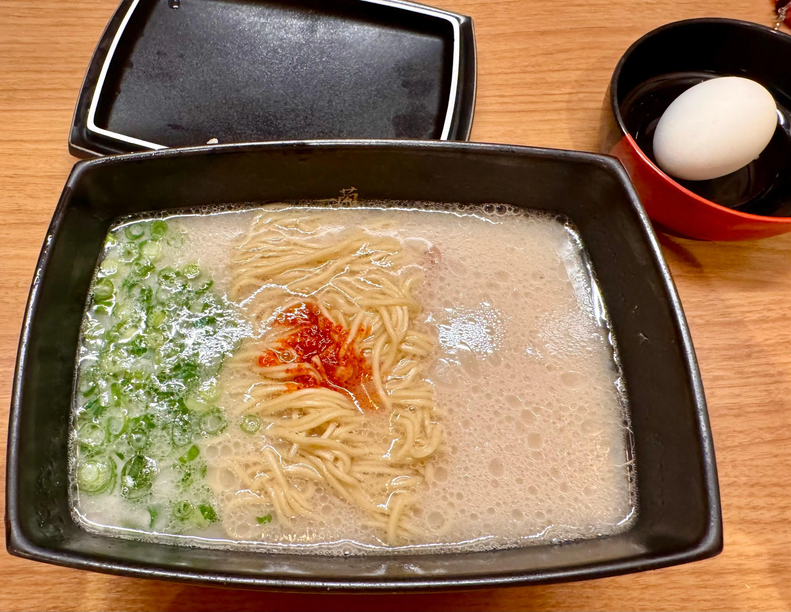
Das ist aber halb so schlimm, denn wir haben wirklich das meiste aus Canal City gesehen und gehen nur noch ein weiteres Mal zur Wassershow, bevor wir den Rückweg zum Hotel antreten. Dieses Mal ist es tatsächlich Mozart. Die Show ist schön, aber ich muss gestehen, dass die J-Pop-Version mehr Spaß gemacht hat. Außerdem habe ich von dem Song noch ewig einen Ohrwurm.
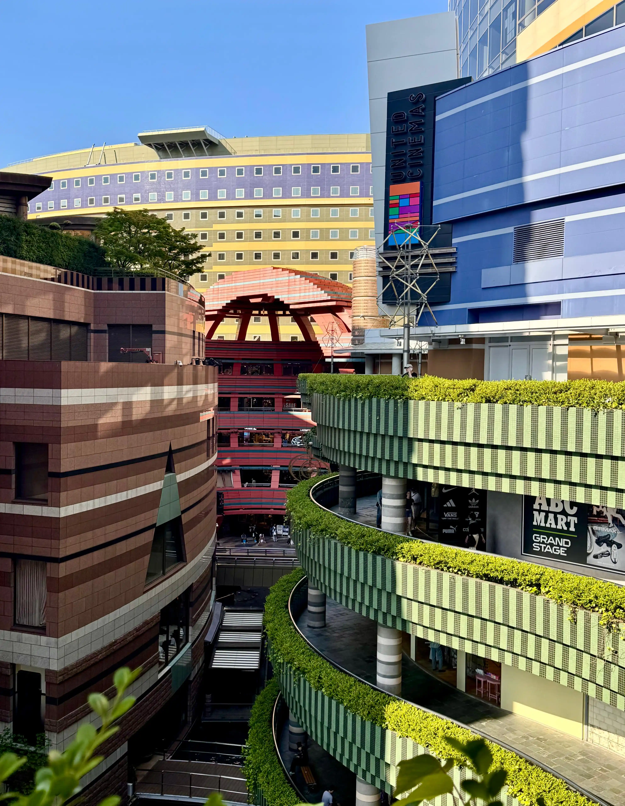
Zurück im Hotel sind wir erst überrascht von der Architektur des Zimmers: Es ist genau so winzig wie die Hotelzimmer, die wir in unserem letzten Urlaub hatten, aber dieses Mal scheinen sich diejenigen, die es eingerichtet haben, tatsächlich Gedanken darüber gemacht zu haben, wo man mit den riesigen Koffern hin soll. Die Lösung waren selbst gebaute Betten mit reichlich Stauraum darunter und sogar Platz genug für eine Garderobe.
Auf dem Bett steht eine kleine Box mit Snacks und einer Willkommenskarte. Außerdem haben wir tatsächlich einen Balkon, von dem aus man auf einen Platz mit Spielplatz und Bänken vor dem Hotel schauen kann. Leute treffen sich und Kinder spielen, es ist ein richtiger kleiner Treffpunkt der Nachbarschaft.
Insgesamt sind unser Hotel und auch das Personal sehr herzlich und freundlich, genau wie die Stadt. Der Tag ist zwar noch nicht um, aber Fukuoka zählt jetzt schon zu meiner Lieblingsstadt des Urlaubs.
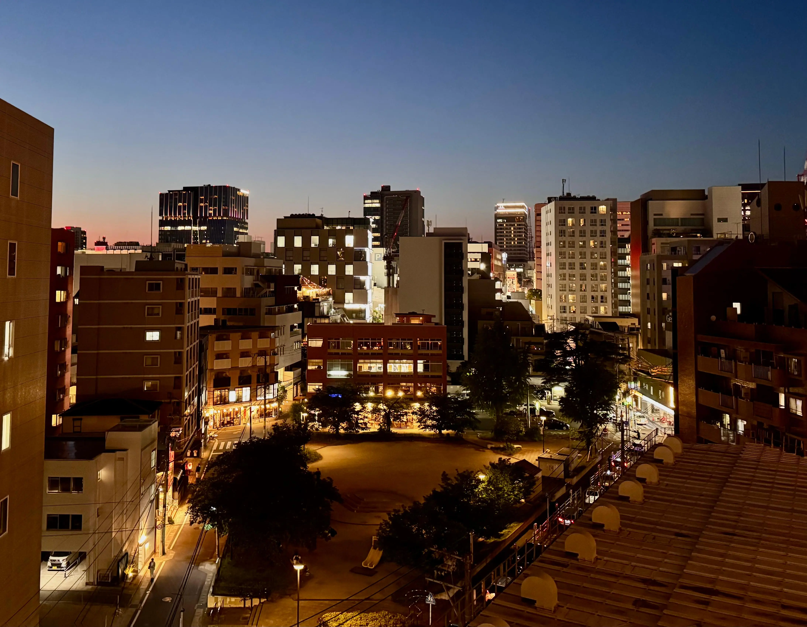
Dieser Eindruck verfestigt sich nur weiter, als wir abends noch mal in die Innenstadt laufen. Es ist bereits dunkel und Essensstände haben am Kanal ihre Fenster hochgeklappt. Um die Stände herum sind Sitzplätze aufgebaut und von Alkohol über Sushi bis hin zu Frittiertem und sogar Nudelsuppe kann man sich alles kaufen. Die ganze Stadt ist auf den Beinen, es ist voll und die Stimmung ausgelassen. Straßenkünstler spielen Musik und es duftet nach Essen.
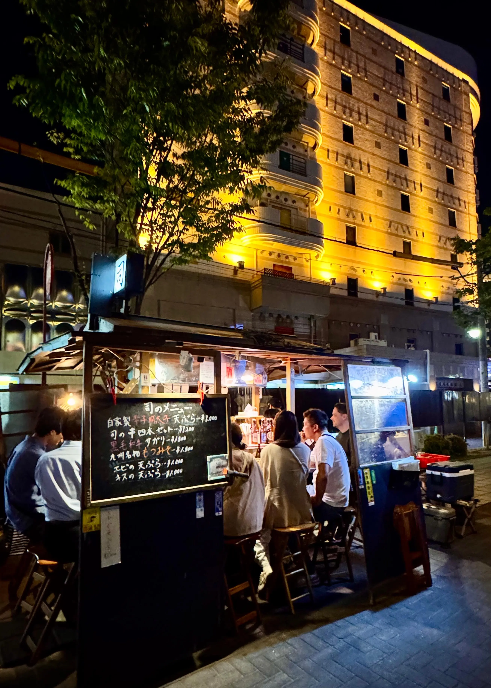
Wir beide holen uns Snacks und Bier aus einem FamilyMart und setzen uns unter schirmförmige Metallkonstruktionen auf einer Brücke. Die Lichter der Stadt glitzern im dunklen Kanalwasser. Hinter uns spielt eine Frau traditionelle japanische Musik und singt mit nasaler Stimme. Wir beobachten das bunte Treiben und lassen es uns gut gehen. Was für ein Abend. Was für eine Stadt. Was für ein toller Urlaub!
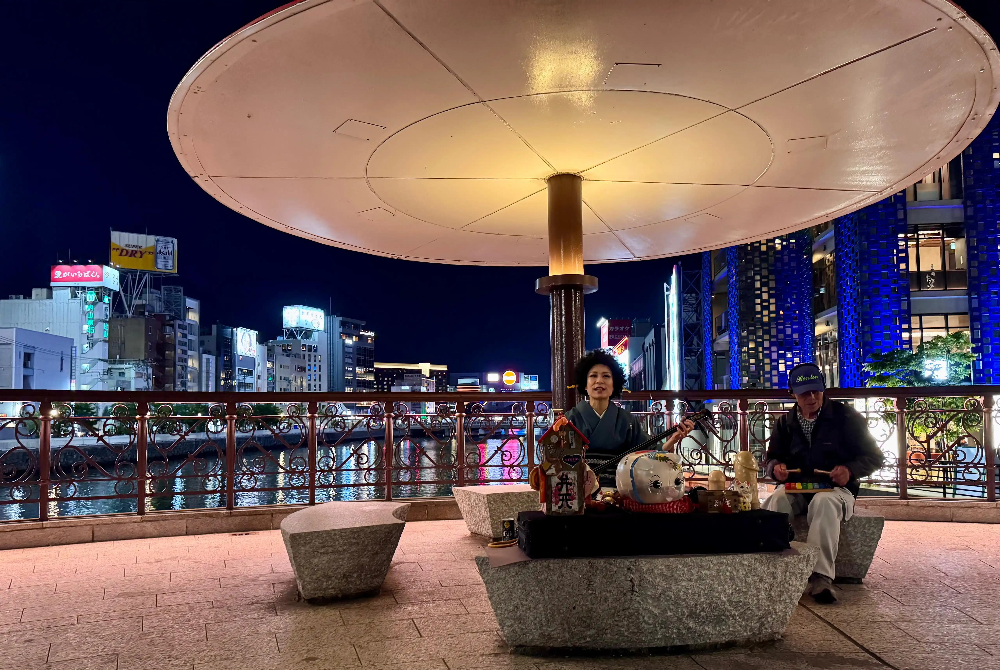
Nach einer lauten Nacht heißt es endlich: Ausschlafen! Der Platz neben dem Hotel wird auch nachts rege genutzt. Auch hier wird scheinbar gerne getrunken. Als ich nachts aufgewacht bin, war ich kurz auf dem Balkon und konnte zwei Freunde beobachten, die eine Challenge daraus gemacht haben, wer am höchsten an einem Straßenschild hochklettern kann. Ich kann sagen: Es war ziemlich hoch.
Wir machen uns entspannt fertig, denn es ist sehr heiß und jede Bewegung kostet Energie. Wir laufen trotzdem die weite Strecke zu unserem heutigen Ziel zu Fuß: Es ist der Ohori Park, eine Anlage, die, wie sollte es in Fukuoka anders sein, um Wasser herum gebaut ist.
Wir gehen durch die hohen Häuser der Großstadt und an all den Läden vorbei, die noch geschlossen sind. Der Weg zum Park ist extrem heiß und es gibt wenig Möglichkeiten, sich unterzustellen. Immerhin habe ich wieder meinen Sonnenschirm dabei, der mich vor dem gröbsten Sonnenbrand schützt. Wir laufen noch durch einen Park mit Burgruine hindurch, um zu unserem eigentlichen Ziel zu kommen, wobei Ruine in dem Fall wirklich sehr „ruinig“ ist und kein großes Spektakel.
Dafür werden wir aber von einer Frau in Omas Alter vorsichtig angesprochen. Sie erzählt, dass sie gerade Englisch lernt, und stellt uns ein paar Fragen, um ihre Sprachkenntnisse zu verbessern. Wir erzählen, wo wir herkommen, und nach fünf Minuten schiebt sie glücklich mit ihrem Fahrrad weiter über den staubigen Burgplatz. Ich hätte ihr gerne gesagt, wie klasse es ist, dass sie Englisch lernt und dass sie besser spricht als die meisten jüngeren Leute, denen wir begegnet sind.
Schließlich kommen wir im Ohori Park an. Was ich mir als kleinen Teich vorgestellt hatte, ist tatsächlich eher ein kleiner See. Es gibt einen breiten, neu angelegten Weg, der in einer Runde komplett herumführt und Platz für Fußgänger, aber auch extra für Jogger und Radfahrer bietet.
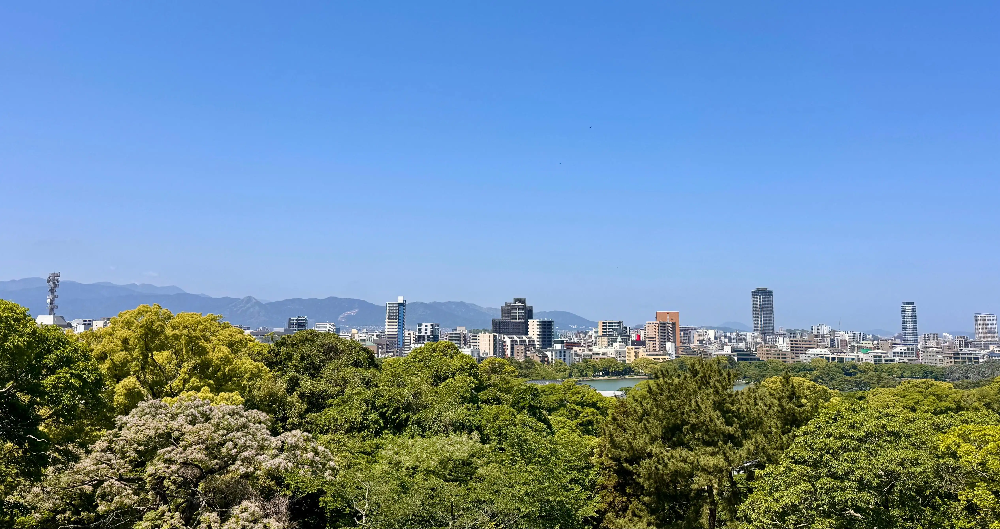
Bänke stehen in rauer Menge am Ufer und wir ruhen uns von der Hitze mit ein paar Nüssen aus, die Mama noch aus Deutschland mitgenommen hatte. Wir entschließen uns schließlich dazu, nicht den ganzen Park zu umrunden, sondern nur ein wenig weiter zu laufen.
Neben dem Weg findet Mama einen weiteren Sonnenschirm, sodass wir endlich beide einen haben. Außerdem ist eine kleine Station neben dem Weg aufgebaut, auf der aus Stein unterschiedlich große Huckel eingebaut sind. Es ist ein Fußreflexzonen-Gang. Niemand anderes hält an, also ziehen Mama und ich unsere Schuhe aus und laufen unter Schmerzen über die Steine. Es ist fast nicht auszuhalten und sieht wahrscheinlich ziemlich witzig aus von außen, denn kurz nach uns werden koreanische Touristen ebenfalls auf den Gang aufmerksam und versuchen sich an den Hindernissen. Immerhin waren es die Schmerzen wert, denn den Rückweg zum Hotel treten wir beschwingter an. Und halten natürlich in dem ein oder anderen Geschäft, das jetzt endlich offen hat. Ich gehe in einen Laden, der auf drei (!) Stockwerken Capsule Toys verkauft und ziehe mir einen Anhänger für meine Tasche.
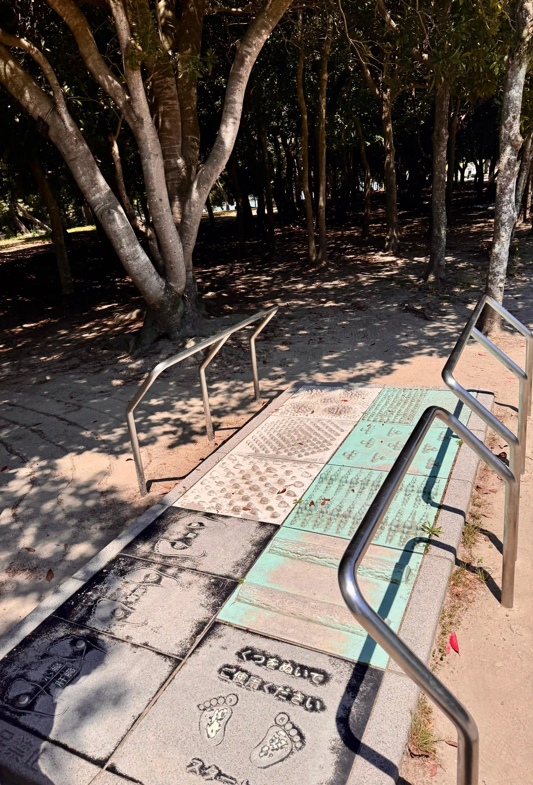
Da es schon relativ spät ist und die Laune bei dem Wetter stetig schlechter wird, gehen wir spontan in ein Restaurant neben der Hauptstraße. Es ist traditionell aufgebaut, also sitzen wir mit dem Blick in die Küche. Wie immer brauchen wir ein bisschen Hilfe vom Kellner, der uns beschreibt, wie man was isst. Wir haben nämlich ein Menü bestellt, mit Omelett, Reis und Suppe mit Tofu darin. Letztere muss man sich selbst holen, das andere wird uns an den Tisch gebracht.
Obwohl wir ja vorher nicht geguckt hatten, was das Restaurant auf Tabelog für Bewertungen hat, war es ein absoluter Glücksgriff, denn das Essen ist köstlich. Das Omelett ist fluffig und nicht zu trocken, die Brühe sanft und den Reis könnte ich auch ohne alles essen.
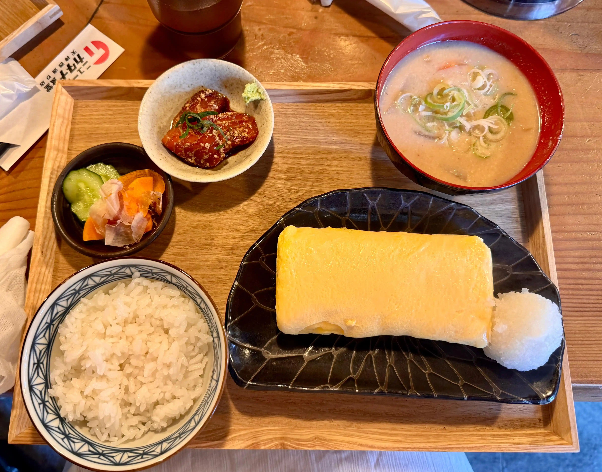
So gestärkt treten wir den Heimweg an. Aber was wäre ein Mittagessen ohne Nachtisch? Wir gehen auf dem Rückweg zu einem Eisladen, den ich dieses Mal tatsächlich vorher rausgesucht hatte wegen der guten Bewertungen. Es ist kein klassisches Milcheis, sondern japanisches shaved ice. Das sind dann Eisflocken, die mit einer Sauce übergossen und mit Beilagen serviert werden.
Mama und ich bestellen beide eins und merken erst, als der Nachbartisch seine Portion bekommt, dass das vielleicht ein Fehler war. Die Portionen sind beinahe handballgroß. Als unser Eis dann kommt (Mamas mit Erdbeere, meins mit Citrusfrüchten), bezweifle ich erst, ob ich das schaffe. Stolz kann ich aber verkünden: Ich hab's geschafft! Dadurch, dass das Eis sozusagen aufgestapelt ist, sieht es nach mehr Volumen aus, als es eigentlich ist. Natürlich bin ich trotzdem pappsatt. Aber nicht geplatzt!
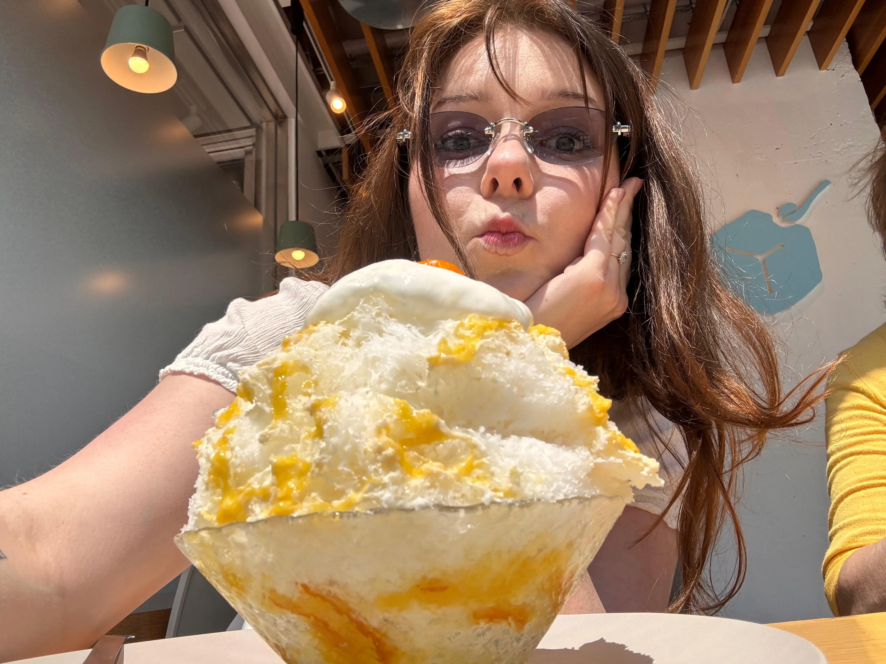
Wir machen lange Pause im Hotel, was nach all den Eindrücken und dem Umhergereise eine nette Abwechslung ist. Außerdem brauchen wir alle Energie für unseren nächsten Stopp.
Schließlich raffen wir uns dann doch noch auf und laufen noch mal zu Canal City. Pünktlich um acht Uhr gibt es da nämlich eine besondere Lichtshow, die mit Projection Mapping auf den Gebäuden der Canal City eine Show des Mecha-Anime-Klassikers Gundam abbildet. Das sind im Prinzip riesige Roboter, die die Erde vor einer Invasion beschützen, die in Fukuoka stattfinden soll.
Es ist laut und grenzt an Reizüberflutung, aber auch sehr gut gemacht. Leider verstehen wir fast nichts von der Show, weil ich mich weder mit Gundam beschäftigt habe noch Japanisch kann. Es ist dennoch interessant, selbst wenn die J-Pop-Show mein Favorit bleibt.
Wir schauen uns noch ein bisschen um, trinken noch einmal was am Kanal und laufen dann durch die Nebenstraßen zurück. Viele Betrunkene und Feierwütige sind unterwegs und die Stimmung ist wie am Vortag ausgelassen. ACs dröhnen aus den riesigen Wohnblöcken und die Lichter schimmern in den vielen Kanälen. Sie begleiten uns auf unserem Weg, bis wir den Abend bei einem leichten Wind auf dem Balkon ausklingen lassen.
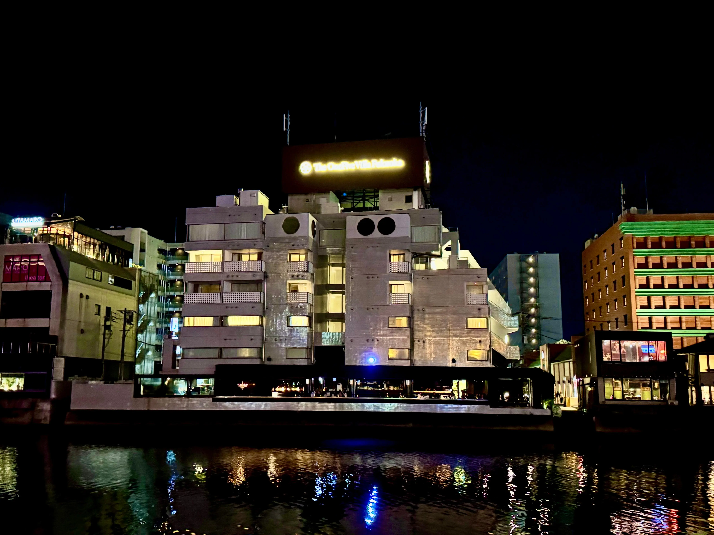